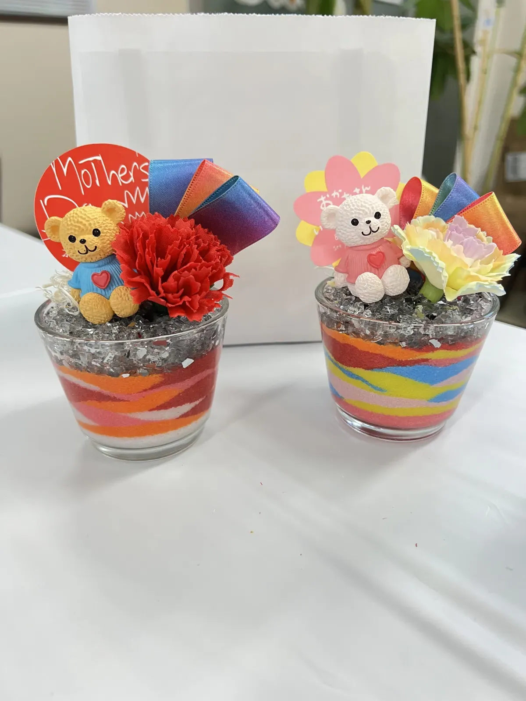

「今年の母の日・父の日、何を贈ろう」「毎年カーネーションや花束で、そろそろありきたりに感じる」
そんな方におすすめしたいのが、手作りのサンドアートギフト。
3歳のお子さまから大人のお孫さんまで、1時間でつくれて「世界に一つだけ」の記念日の贈り物が完成します。年間100件以上のオーダーを手がけるサンドアート講師が、選ばれる理由と作り方を解説します。
なぜ手作りプレゼントが喜ばれるのか
母の日・父の日の定番といえば、お花・お菓子・ギフト券。でも、毎年同じような贈り物だと「気持ちが伝わりづらい」と感じることはありませんか？最近、母の日・父の日に手作りのプレゼントが再評価されています。
気持ちが「モノ」として伝わる
手作りのギフトには、買ったものには決してない温かみがあります。「この人のために時間を使って作った」という事実そのものが、なによりのプレゼント。
お母さん・お父さんにとって、子どもや孫が自分のために頑張って作ってくれたものは、何年経っても色褪せない特別な宝物になります。
唯一無二の記念品になる
お店で買えるものは「他の誰かも持っている可能性」がありますが、手作りプレゼントは世界に一つだけ。同じ砂・同じ瓶を使っても、手の動き・配色の選び方で全く違う作品になるのがサンドアートの魅力です。
「これ、世界に一つだけのプレゼントなんだよ」と伝えたとき、受け取る側の喜びはひとしおです。
食べ物やお花と違って、ずっと飾れる
食品やお花は嬉しいけれど、数日〜数週間で消えてしまうもの。サンドアートは飾って残せるインテリアなので、記念日のたびに「あの日に贈ってくれた」という思い出が蘇ります。
「子どもが作ってくれた作品を10年間飾り続けている」「孫からの贈り物が玄関のシンボルになっている」——そんな声を毎年いただいています。
母の日・父の日にサンドアートが選ばれる3つの理由
数ある手作りギフトの中でも、なぜサンドアートが母の日・父の日のプレゼントに選ばれるのか。その理由は3つあります。
理由1：絵が苦手でも必ず綺麗にできる
「手作りって素敵だけど、自分には絵心がないから無理…」と諦めている方へ朗報です。サンドアートは失敗がないアート。どんな配色で、どんな順番で砂を入れても、必ず美しい作品に仕上がります。
絵や工作が苦手な方ほど「私にもこんなに綺麗なものが作れた」という喜びが大きく、プレゼントする側も自信を持って渡せるのが魅力です。
理由2：3歳の子どもから大人まで作れる
サンドアートは3歳の子どもから大人まで、誰でも楽しく作れるのが特徴。幼稚園児の小さな手でも、砂をすくってグラスに入れるだけなので簡単です。
一方で大人が本格的に作れば、繊細な模様や文字入れまで表現可能。「孫から祖父母へ」「大人のお子さまから高齢の親へ」など、贈り手の年齢を選ばないオールマイティなギフトです。
理由3：飾って楽しめる・使い捨てにならない
完成したサンドアートは、そのままお部屋のインテリアになります。玄関・リビング・寝室など、飾る場所によって雰囲気を変えて楽しめるのも嬉しいポイント。
「昨年いただいた作品と並べて飾っています」というご家庭も多く、年々コレクションのように増えていくのも手作りギフトならではの楽しみ方です。
シーン別おすすめ制作パターン
お子さまの年齢やご家族の状況によって、おすすめの作り方は変わります。シーン別にご紹介します。
小さな子と一緒に（3〜6歳）
未就学のお子さまには、おうちで親子一緒に楽しめるオンライン体験がおすすめ。材料キットが届くので準備は不要。画面越しに講師が手順を優しくサポートします。
3歳のお子さまでも、親のサポートがあれば自分の手で完成させられます。「ママに内緒でパパへ」「パパと一緒にママへ」など、サプライズ企画としても人気です。
小学生以上が一人で作る
小学生以上になれば、一人で作ることにチャレンジできます。キットの中に入っているレシピ通りに進めれば、1時間で完成。
「自分で考えて、自分で作った」という達成感が、お子さまの自信にもつながります。母の日・父の日のプレゼント制作を通じて、感謝の気持ちを伝える練習にもなる良い機会です。
大人が本格的に（オーダーメイド）
「遠方の親にプロのクオリティで贈りたい」「記念日の特別な一品にしたい」という方には、オーダーメイド制作がおすすめ。
お名前・記念日・ご両親の思い出の風景などをヒアリングして、世界に一つだけのオリジナル作品をお作りします。「両親の結婚記念日をテーマに」「故郷の海の色で」といったストーリーのあるギフトが人気です。
遠方の親へ贈る（オンライン完成＆宅配）
「離れて暮らす親に会えないけれど、何か気持ちを贈りたい」という方には、オンラインで作って直接宅配できるプランが人気です。
お子さまがおうちで作った作品を、私たちが梱包して親御さまの元へ直送。メッセージカードを添えれば、サプライズの大人の手作りギフトとして温かく届きます。
母の日・父の日のギフト、LINEで早めに相談♪
お見積り・空き状況のご確認はLINEで気軽に♪
通常2営業日以内にご返信いたします。
メッセージの添え方アイデア
せっかくの手作りプレゼント、メッセージを添えるとさらに特別な贈り物になります。おすすめのメッセージアイデアをご紹介します。
子どもの手書きメッセージカード
お子さまの手書きメッセージほど、親の心を打つものはありません。「おかあさんだいすき」「おとうさんありがとう」など、短いひとことで十分。
手書きの字がまだ書けない小さなお子さまなら、手形を押したカードを添えるのもおすすめです。
サンドアートの色に意味を込める
「お母さんの好きなピンク」「お父さんの好きな海の青」など、選んだ色の意味を一言添えると、ぐっと深い贈り物になります。
「ママがいつも着ているカーディガンの色」「お父さんと釣りに行った日の空の色」など、2人だけのストーリーがある配色は、聞いた瞬間に涙が出るほど感動的です。
記念日の文字や日付を入れる
オーダーメイドなら、お名前・記念日・一言メッセージを砂で表現できます。「Mom 2026.5.11」「Thank You Dad」など、シンプルな英文字も人気。
毎年贈り続けて、年号だけ変えるシリーズにするファミリーもいらっしゃいます。
費用の目安
サンドアートギフトの料金は、作り方や仕上げによって変わります。予算に合わせて選べる3つのプランをご紹介します。
| オンライン体験 | 2,000円/人〜 （材料キット付き・講師のオンライン指導） |
|---|---|
| キット単品（自宅で自由に制作） | 1,500円〜 カラー砂・グラス・スプーン・レシピ付き |
| オーダーメイド | 5,500円〜 プロが制作・名入れ・記念日文字入れ可 |
| ラッピング | +500円〜 母の日・父の日用デザイン対応 |
| 送料 | 全国一律800円〜 親御さまへ直接発送も可 |
| 所要時間 | 約60分（オンライン体験・キット） |
「予算3,000円以内で子どもと一緒に楽しみたい」「オーダーで両親の金婚式記念にしたい」など、ご希望に合わせたプランもご提案します。
よくある質問
母の日・父の日の何日前に注文すればいいですか？
オンライン体験キットは最短7日・オーダーメイドは2週間前までのご注文がおすすめです。母の日・父の日の週は注文が集中するため、できれば3週間前までにLINEでご相談いただけると安心です。
ラッピング対応は可能ですか？
はい、ラッピング対応しています。母の日向けのお花柄・父の日向けのシックな柄など、ご希望のイメージをお伝えください。メッセージカードの添付も無料でお受けしています。
遠方の親へ直接発送してもらえますか？
はい、全国どこへでも直接発送いたします。オーダーメイド作品は完成後に梱包してお届け。オンライン体験の場合、お子さまが作った作品を親御さまへ宅配する「サプライズ便」もご用意しています。
名入れやメッセージを入れることはできますか？
オーダーメイドなら、お名前・記念日・一言メッセージを砂で表現できます。「お母さんありがとう」「2026.5.11」といった文字も、サンドアート特有の優しい質感で仕上がります。
お申し込み方法
お申し込みはとっても簡単。LINEで「母の日ギフト相談」または「父の日ギフト相談」とお送りください。ご予算・贈る相手・ご希望のスタイルをお伺いして、最適なプランをご提案します。今年の記念日は、世界に一つだけの手作りプレゼントを。
母の日・父の日の手作りサンドアートギフト
オンライン体験 2,000円〜 / オーダーメイド 5,500円〜｜全国発送OK
LINEで「母の日ギフト相談」と送るだけ！

原野 玲未REMI HARANO
サンドアート講師 / Webデザイナー / 5児の母
福岡県在住。日本サンドアート協会認定講師として年間100件以上のワークショップを開催。母の日・父の日の手作りギフト制作サポートや、オーダーメイドの贈り物も全国対応しています。